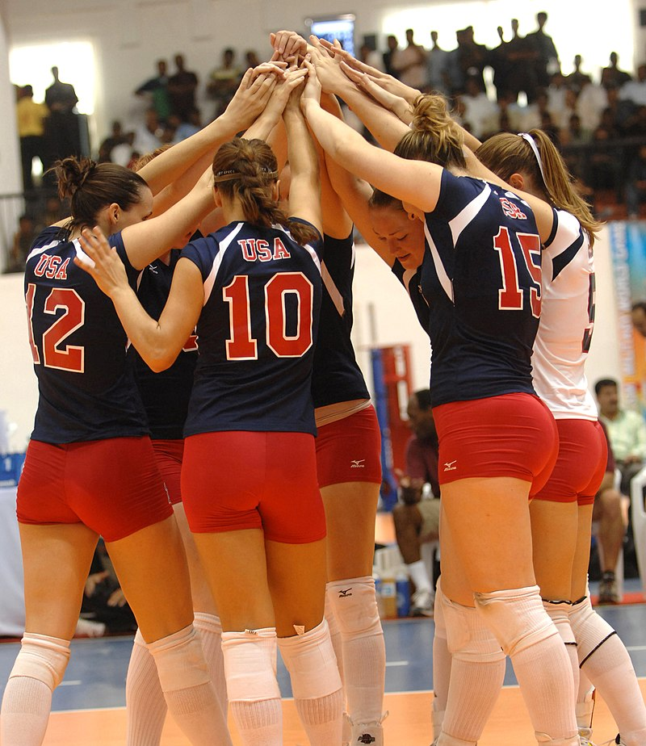

WELCOME TO MY FIRST WEBSITE
TEAM PLAY.
TEAM PLAY

|
- Volleyball is essentially a game of transition from one of the above skills to the next, with choreographed team movement between plays on the ball. These team movements are determined by the teams chosen serve receive system, offensive system, coverage system, and defensive system.
The serve-receive system is the formation used by the receiving team to attempt to pass the ball to the designated setter. Systems can consist of 5 receivers, 4 receivers, 3 receivers, and in some cases 2 receivers. The most popular formation at higher levels is a 3 receiver formation consisting of two left sides and a libero receiving every rotation. This allows middles and right sides to become more specialized at hitting and blocking.
Offensive systems are the formations used by the offence to attempt to ground the ball into the opposing court (or otherwise score points). Formations often include designated player positions with skill specialization (see Player specialization, below). Popular formations include the 4–2, 6–2, and 5-1 systems (see Formations, below). There are also several different attacking schemes teams can use to keep the opposing defence off balance.
Coverage systems are the formations used by the offence to protect their court in the case of a blocked attack. Executed by the 5 offensive players not directly attacking the ball, players move to assigned positions around the attacker to dig up any ball that deflects off the block back into their own court. Popular formations include the 2-3 system and the 1-2-2 system. In lieu of a system, some teams just use a random coverage with the players nearest the hitter.
Defensive systems are the formations used by the defence to protect against the ball being grounded into their court by the opposing team. The system will outline which players are responsible for which areas of the court depending on where the opposing team is attacking from. Popular systems include the 6-Up, 6-Back-Deep, and 6-Back-Slide defence. There are also several different blocking schemes teams can employ to disrupt the opposing teams' offence.
When one player is ready to serve, some teams will line up their other five players in a screen to obscure the view of the receiving team. This action is only illegal if the server makes use of the screen, so the call is made at the referee's discretion as to the impact the screen made on the receiving team's ability to pass the ball. The most common style of screening involves a W formation designed to take up as much horizontal space as possible.